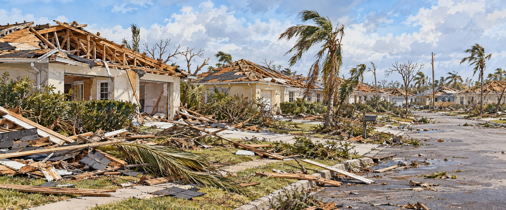

Hurricane Andrew (1992)
The Storm That Rebuilt Florida

Wind, not surge, did most of the damage, and Homestead was stripped to its slabs.
Shortly after 3:30 a.m. on August 24, 1992, Miami meteorologist Bryan Norcross grabbed his notebook and moved to the safest room of his own television station, still broadcasting as the building took damage. By sunrise, Homestead and nearby communities had been stripped to their foundations. Andrew killed far fewer people than the 1928 and 1935 storms, largely because its small eye passed just south of Miami’s dense urban core. In property loss, institutional reform, and the way Florida builds homes, it remains one of the most consequential storms in modern Florida history.
A Compact, Furious Storm
Andrew formed on August 16, 1992, struggled against wind shear for days, then intensified rapidly after August 22 to peak winds near 175 miles per hour. After crossing the Bahamas as a Category 5, it struck near Homestead on August 24 with sustained winds estimated at 165 to 175 miles per hour. The National Hurricane Center’s own instruments were lost in the storm. Andrew’s eye stayed tight and well-formed, concentrating its worst winds in a narrow corridor that passed just south of Miami and Fort Lauderdale.
Homestead, Stripped to the Slab
Wind, not surge, did most of the damage. Across Dade County Andrew destroyed more than 25,000 houses and damaged over 100,000 more, leaving more than 160,000 people homeless. It damaged businesses, schools and healthcare facilities, and left over a million Floridians without power.
A Federal Response Criticized as Too Slow
The federal response drew sharp criticism for delays in relief. The military set up tent cities in Homestead and Florida City for 3,800 displaced residents, and a sixth opened at the Miccosukee reservation after schools closed their shelters. FEMA ultimately provided temporary mobile homes to 3,501 families and financial help to more than 40,000 others.
Insurance Companies Fail
At least eleven, and by some counts sixteen, insurance companies became insolvent because of Andrew losses, and more than 930,000 South Florida policyholders lost coverage, generating over 600,000 claims. After Andrew, the Legislature created the Residential Property and Casualty Joint Underwriting Association; the Florida Windstorm Underwriting Association already existed. in 2002 they merged into Citizens Property Insurance Corporation, a state-run insurer that remains a major presence in Florida.
A New Way to Build a House
Investigators found roofs never properly attached, windows and doors that failed under debris, and codes undermined by lax enforcement. Florida authorized its statewide building code in 1998; it took effect on March 1, 2002, covering wind-load design, roof connections, openings, and anchoring. A University of Florida study after the four hurricanes of 2004 found that homes built under the code sustained significantly less damage, and a 2006 Legislature report after the 2005 storms reached the same conclusion.
A County That Never Looked the Same
Miami-Dade lost about 36,000 residents in 1992 alone while Broward gained about 17,000 and Palm Beach about 2,300. By 2001 more than 230,000 people had moved from Miami-Dade to Broward. In Homestead, the Latino share of the population rose from thirty to forty-five percent between 1990 and 2000 as rebuilding drew new residents and workers.
Quick Facts
| Landfall | Near Homestead, August 24, 1992, Category 5 |
|---|---|
| Winds | Estimated 165–175 mph sustained; gusts as high as 177 mph |
| Homes | More than 25,000 destroyed and over 100,000 damaged in Dade County |
| People homeless | More than 160,000 |
| Florida deaths | 44 (15 direct, 29 indirect); other tallies differ |
| Damage | About $25–27 billion in 1992 dollars |
| Insurers failed | At least 11, by some counts 16 |
| Building code | Authorized in 1998; effective March 1, 2002 |
| New institution | Citizens Property Insurance Corporation (2002) |
Did You Know?
Meteorologist Bryan Norcross kept broadcasting from inside his own damaged station.
The statewide building code that took effect in 2002 traces directly to Andrew’s failures.
Andrew is one of a handful of Category 5 hurricanes to make U.S. landfall.
Vocabulary
Building code: a set of legal standards for how buildings must be constructed.
Insolvent: unable to pay debts; here, insurers that could not cover their claims.
Wind shear: a change in wind speed or direction with height that can weaken a storm.
Discussion Questions
1. Why did a storm that killed relatively few people still change Florida so much?
2. How did the state’s response to the insurance collapse still shape Florida today?
Related Articles
FLH-0008 — Hurricane Charley (2004)
Sources
Encyclopaedia Britannica. “Hurricane Andrew.” britannica.com
National Weather Service, Louisville. “Hurricane Andrew: 30 Year Anniversary.” weather.gov
AXA XL. “Remembering Hurricane Andrew’s Lessons, 30 Years Later.” axaxl.com
The Washington Post. “Hurricane Andrew Transformed Florida’s Building Codes.” washingtonpost.com
Florida Custom Homes. “The History of Hurricane Building Codes in Florida.” floridacustomhomes.com
Penn State EARTH 107. “1992 Hurricane Andrew and Housing Sensitivity in South Florida.” courses.ems.psu.edu
Insurance Information Institute. Hurricane Andrew insurance impact data.
Wikipedia. “Hurricane Andrew” and “Effects of Hurricane Andrew in Florida.”
Florida Building Commission — Building Code history